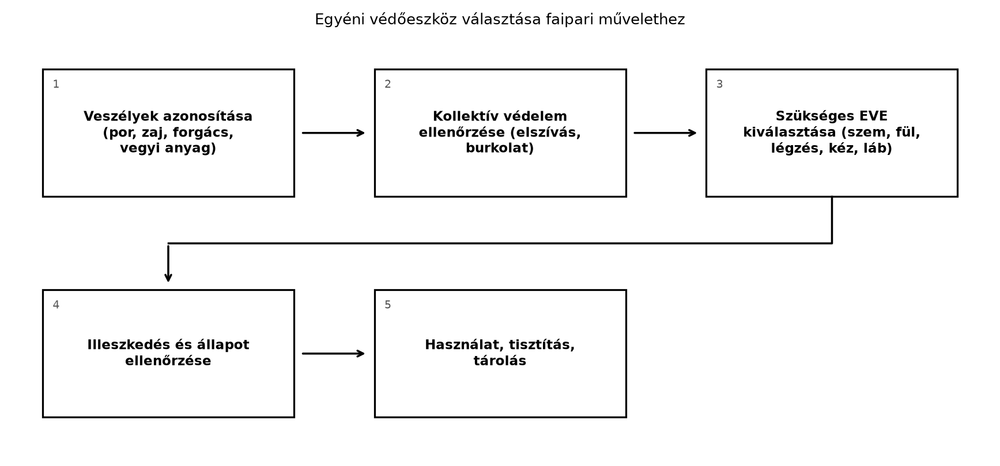

Egy tanuló a tanműhelyben szalagcsiszolóval csiszol egy tölgyfa asztallapot. A gép mellett fapor száll, a gép hangos, és a munkadarab széle éles. A tanuló az első napján dolgozik, ezért az oktató megállítja, és közösen ellenőrzik: visel-e védőszemüveget, milyen a fülvédő, a csiszológéphez tartozik-e elszívás, és miért tilos a kesztyű a forgó szerszám közelében. Ez a helyzet mutatja: nem elég ismerni a gépet, a munkavégzésnek személyi feltételei is vannak, és a dolgozónak egyéni védőeszközöket kell viselnie, ha a veszélyt más módon nem lehet elkerülni.
Képzelj el egy faipari műhely falán egy védőeszköz-állványt. Az állványon sorban lógnak: átlátszó védőszemüveg, fülvédő tok, félálarcos légzésvédő, bőr kesztyű, védőcipő. Alatta kis táblázat: „Melyik géphez melyik védőeszköz kell?”. A tanuló a munka megkezdése előtt ezt az állványt nézi meg, és kiválasztja a művelethez tartozó felszerelést. Ez a fejezet ezt a választást tanítja meg: mikor, mit, miért kell viselni.
A faipari műhelyben csak olyan személy dolgozhat, aki megfelel a jogszabályi, egészségi és szakmai feltételeknek. E feltételek célja, hogy a dolgozó ne okozzon balesetet magának vagy másnak, és a munka ne károsítsa az egészségét.
Definíció. A munkavégzés személyi feltételei azok a követelmények, amelyek a dolgozó életkorára, egészségi alkalmasságára, szakképzettségére és munkavédelmi oktatására vonatkoznak. Ide tartozik az orvosi alkalmassági vizsgálat, a foglalkoztatási tilalmak betartása, valamint a szükséges szakmai és biztonsági ismeretek megléte.
Szabály. A munkáltató csak olyan munkavállalót foglalkoztathat, aki az adott munkakörre orvosilag alkalmas, rendelkezik a szükséges szakképzettséggel vagy betanítással, és részt vett a munkavédelmi oktatáson. A tanuló a tanműhelyben az oktató felügyelete alatt dolgozhat, és csak azokat a gépeket kezelheti, amelyekre betanították.
Jogszabályi háttér. A foglalkoztatás személyi feltételeit a munkavédelmi törvény és a kapcsolódó jogszabályok rendezik (ellenőrizendő: hatályos törvény- és rendeletszám). A jogszabályok tartalmazzák:
A faipari műhelyben a leggyakoribb foglalkoztatási tilalmak közé tartozik: fiatalkorú nem foglalkoztatható egyedül, éjszakai műszakban vagy olyan munkakörben, ahol rákkeltő porral, mérgező oldószerrel dolgozna (ellenőrizendő: a hatályos munkaügyi és munkavédelmi szabályok szerint). Várandós nő nem végezhet nehéz fizikai munkát vagy olyan munkát, ahol oldószergőznek van kitéve (ellenőrizendő: aktuális korlátozások és határértékek).
A faipari munkakörök jelentős része fizikai terheléssel jár, valamint porral, zajjal és vegyi anyagokkal való expozícióval. Ezért a munkavállalót munkaköri orvosi vizsgálat alá kell vonni.
Definíció. A munkaköri orvosi alkalmassági vizsgálat annak megállapítására szolgál, hogy a dolgozó az adott munkakört egészségi szempontból el tudja látni, és nem áll fenn olyan betegség vagy állapot, amely a munkavégzés során a saját vagy mások egészségét veszélyeztetné.
A vizsgálat kiterjed például:
Megjegyzés. Az orvosi vizsgálat eredménye alapján az orvos alkalmas, korlátozottan alkalmas vagy alkalmatlan minősítést ad. Korlátozás esetén a munkáltatónak a munkakört úgy kell kialakítani, hogy a dolgozó a korlátozásnak megfelelően dolgozhasson (pl. ne emeljen nehéz terhet, ne dolgozzon poros környezetben).
A munkavédelmi oktatás nem egyszeri esemény, hanem ismétlődő kötelezettség. A dolgozó csak akkor kezdhet munkát, ha az adott munkahely és munkakör veszélyeiről, a védőeszközökről, a gépek biztonságos használatáról, a menekülési útvonalakról és a baleseti teendőkről eligazítást kapott.
Szabály. A munkavédelmi oktatást a munkába lépés előtt, majd időszakosan meg kell ismételni, továbbá akkor, ha új gépet, új anyagot vagy új technológiát vezetnek be. A faipari gépek kezeléséhez betanítás és felügyelet szükséges; a tanuló csak az oktató által jóváhagyott gépet kezelheti.
Szabály. A faipari műhelyben tilos egyedül dolgozni olyan gépi műveletnél, anyagmozgatásnál vagy vegyi anyag kezelésénél, amelyben fennáll a baleset vagy az egészségkárosodás kockázata. Legalább egy másik személynek látótávolságon belül vagy hallótávolságra kell tartózkodnia, aki baleset esetén segítséget tud hívni.
Valós életbeli indoklás. Ha a dolgozó a körfűrészgépnél visszavágódó munkadarabtól megsérül, és egyedül van, nem tud segítséget hívni. Ha a műhelyben ketten vannak, a másik azonnal megállíthatja a gépet, értesítheti az oktatót vagy a mentőt. Ezért az egyedül végzett munka tilalma nem kényelmetlenség, hanem életmentő szabály.
Tilos. Veszélyes gépi műveletet, nehéz anyagmozgatást vagy oldószeres munkát felügyelet nélkül, egyedül végezni. A tanuló a tanműhelyben soha ne dolgozzon oktató vagy megbízott szakember jelenléte nélkül.
A faipari munka során számos veszély fenyeget: szálló por, zaj, repülő forgács, éles szerszám, leeső munkadarab, vegyi anyag. A veszélyek megelőzésének sorrendje: kollektív védelem (elszívás, gépvédő burkolat) előbb, utána egyéni védelem (védőeszköz viselése). A védőeszköz nem helyettesíti a gépvédelmet, hanem kiegészíti.
Definíció. Az egyéni védőeszköz (EVE) olyan eszköz, amelyet a dolgozó visel vagy tart, hogy védje magát egy vagy több egészségi és biztonsági kockázat ellen. Ilyen például a védőszemüveg, fülvédő, légzésvédő, védőkesztyű, védőcipő, védőruha, sisak.
A faipari műhelyben az alábbi védőeszközök a leggyakoribbak:
A gyalulás, marás, csiszolás során forgács, por vagy apró részecske repülhet a szembe. A védőszemüveg oldalvédős kialakítású legyen, mert a forgács oldalról is bejuthat. Ha fennáll a repülő szilánk veszélye, az arcvédő plexi is indokolt.
Szabály. Szemvédőt kell viselni minden olyan műveletnél, ahol forgács, por, vegyi anyag cseppje vagy repülő részecske keletkezhet. A védőszemüvegen nem szabad repedésnek lennie, és a látómezőt nem akadályozhatja karcolás.
A gyalugép, körfűrész, vastagsági gyalu, marógép tartós zajterhelése halláskárosodást okoz. A hallásvédő lehet fülvédő tok (fülvédő) vagy hallásvédő dugó (süketítő dugó). A kiválasztásnál a zajszint és az expozíciós idő a mérvadó.
Szabvány. A zajexpozíciós határértékeket és a hallásvédő kiválasztását a zaj elleni védekezésre vonatkozó magyar jogszabály és az európai zajvédelmi irányelv szerint kell meghatározni (ellenőrizendő: hatályos magyar zajvédelmi rendelet és határértékek). A hallásvédő csillapítását a gyártó adja meg SNR értékkel (dB) (ellenőrizendő: a gyártói adatlapról).
Példa. Ha egy gép zaja 95 dB, és a munkavállaló napi zajexpozíciója meghaladja a jogszabályi beavatkozási szintet, hallásvédőt kell viselni (ellenőrizendő: aktuális határérték). A használt fülvédő tok csillapítása legyen legalább annyi, hogy a fülbe jutó zaj a megengedett szint alá csökkenjen (ellenőrizendő: számítási szabály és határérték).
A fapor, különösen a keményfapor (pl. tölgy, bükk) rákkeltő hatású. A csiszolás, fűrészelés, marás során por keletkezik, ezért elszívást és légzésvédőt kell használni. A légzésvédő lehet:
A szűrőosztály jelölését a gyártói adatlapon ellenőrizni kell; a műhelyben a munkáltatónak kockázatértékelés alapján kell meghatározni, milyen fokozat szükséges (ellenőrizendő: a faporra vonatkozó expozíciós határérték és a légzésvédő szabványok).
Figyelem. A szakáll és a borosta miatt a félálarc nem zár rendesen. A légzésvédő használata előtt ellenőrizni kell az illeszkedést és a szűrő állapotát. A nedves, eldugult szűrőt ki kell cserélni.
A védőeszköz csak helyesen felvéve véd. A habszivacs füldugót vékonyra sodorva, a fülkagylót hátra-felfelé húzva kell mélyen behelyezni, és 20–30 másodpercig tartani, amíg kitágul; a félig kilógó dugó alig csillapít. A porálarcnál a gumipántok a fejtetőre és a tarkóra kerülnek, az orrkengyelt két kézzel kell az orrhoz igazítani, végül erős kilégzéssel ellenőrizd, hogy a peremnél nem szivárog-e a levegő. Borostás arcon a perem nem zár.
A kéz védelme a faiparban kétféle lehet: mechanikai védelem (éles szél, szálka, forgács ellen) és vegyi védelem (oldószer, pác, lakk, ragasztó ellen).
Tilos. Kesztyűt viselni forgó szerszám közelében! A fűrészlap, a maró, a fúró, a gyalutengely elkaphatja a kesztyűt, és a kezet a szerszámba ránthatja. Ezért az asztali körfűrész, szalagfűrész, marógép, fúrógép, egyengető gyalu, vastagsági gyalu, csapozó maró és más forgó szerszámos gép mellett a kesztyű használata tilos. A kezet ilyenkor tolófával, tolókocsival és védőburkolattal védjük, nem kesztyűvel.
Szabály. Kesztyűt akkor lehet viselni, ha a kéz nincs a forgó szerszám közelében, például anyagmozgatásnál, táblás lapok szállításánál, éles bútorlap él megfogásánál, ragasztó- vagy oldószeres tisztításnál (vegyi védőkesztyű). A kesztyű anyagát és méretét a végzett munkához kell választani.
A faipari műhelyben a lábakra leeső munkadarab, szerszám vagy paletta veszélyt jelent. A védőcipő acél orrbetéttel és csúszásmentes talppal véd. A védőcipő a gépi munkánál is fontos, mert a leeső alkatrész a lábfejet is eltörheti.
Szabály. A műhelyben puha talpú sportcipőben, szandálban vagy mezítláb dolgozni tilos. A védőcipő orrát ne érje éles ütés; a megsérült védőcipőt le kell cserélni.
A faipari védőruha legyen testhez simuló, szakadásálló, és ne legyenek lelógó részei. A laza ujj, lelógó zsinór, sál, kibontott hosszú haj a forgó szerszámhoz érhet, és beránthat.
Tilos. Forgó szerszámmal rendelkező gép mellett laza ruházatot, ékszert, nyakláncot, karkötőt, gyűrűt, karórát viselni. A hosszú hajat össze kell fogni, és hajhálóval vagy sapkával kell rögzíteni.
Szabály. A munkáltató köteles a munkavállalónak térítésmentesen biztosítani a munkakörhöz szükséges egyéni védőeszközöket. A juttatás módját, a védőeszközök körét és használati idejét a munkáltatónak belső szabályzatban kell meghatározni (ellenőrizendő: a hatályos munkavédelmi jogszabály és a munkáltatói szabályzat). A védőeszköz beszerzési költségét a munkáltató viseli; a dolgozóval nem fizettetheti meg.
A védőeszközöket a munkáltató által meghatározott helyen kell tárolni, és a dolgozó köteles azokat rendeltetésszerűen használni, valamint a sérült, elhasználódott eszközt jelezni. A védőeszköz nem magántulajdon, hanem munkaeszköz: csak a munkahelyen, az adott munkához szabad használni.
Megjegyzés. A védőeszköz használata nem alku tárgya. A dolgozó nem dönthet úgy, hogy „ma nem veszem fel a fülvédőt, mert zavar”. A munkáltató köteles a használatot megkövetelni, a dolgozó köteles viselni.
A foglalkozás-egészségügy a munkavégzés és az egészség kapcsolatát vizsgálja. Négy fő tárgyköre van:
Munkaélettan: a szervezet működése a munkavégzés alatt (izommunka, fáradás, keringés, légzés). A faipari munka részben álló, részben hajoló, emelő munkát igényel, ezért a szünetek és a váltott testhelyzet fontosak.
Munkalélektan: a munka pszichés hatásai (stressz, monotónia, figyelem, felelősség). A gépi munkánál a fáradtság csökkenti a figyelmet, ami balesethez vezethet.
Munkakörülmények: zaj, por, hőmérséklet, világítás, levegő. A rossz megvilágítás, a hideg műhely vagy a poros levegő rontja a teljesítményt és az egészséget.
Munkakultúra: a rendezett munkahely, a szerszámok és védőeszközök rendben tartása, a személyi higiénia. A munkakultúra része, hogy a dolgozó a szünetekben kezet mos, nem a poros ruhában étkezik, és a védőeszközt tisztán tartja.
Szabály. A faipari műhelyben személyi higiéniára kiemelt figyelmet kell fordítani. Étkezni, inni, dohányozni csak a kijelölt helyen szabad, soha nem a gépek mellett, ahol por, forgács vagy vegyi anyag szennyezheti az ételt. A munka végeztével a dolgozó mossa meg a kezét, arcát; oldószeres munka után használjon bőrvédő krémet is, ha az orvos javasolja. A poros munkaruha ne kerüljön az otthoni ruhával közös szekrénybe; a műhelyben öltözőszekrényben kell tartani.
Az ergonómia a munkavégzés és a munkahely kialakításának a dolgozó testméreteihez és természetes mozgásaihoz való igazítását jelenti. A cél: kevesebb fáradás, kevesebb baleset, jobb minőség.
Definíció. Az ergonómia olyan tudományterület, amely a munkakörnyezetet, a szerszámokat és a munkafolyamatokat a dolgozó testi, érzékszervi és szellemi adottságaihoz igazítja.
A faipari műhelyben az ergonómia legfontosabb területei:
A munkapad vagy gépasztal magassága akkor ideális, ha a munkafelület a könyökmagasság alatt van, így a dolgozó egyenes háttal, laza vállal és egyenes csuklóval dolgozhat. Gyalu, maró, csiszolás esetén a munkamagasságot úgy kell beállítani, hogy a dolgozó ne görnyedjen folyamatosan. Tájékoztató érték: a munkapad magassága könyök alatt 100–150 mm-rel van, álló munkánál kb. 850–950 mm testmagasságtól függően (ellenőrizendő: ergonómiai szakkönyvi ajánlás, testmagasságtól függő).
Példa. Egy 175 cm magas dolgozó könyökmagassága állva kb. 1050–1100 mm; a gyalupad magassága ennél 100–150 mm-rel alacsonyabb, kb. 900–950 mm, gyaluláshoz inkább az alsó érték (ellenőrizendő: ergonómiai ajánlás, egyéni beállítás). Ellenőrzés: álló helyzetben, lazán leengedett karral mérd meg a könyökmagasságot, és vonj le belőle 100–150 mm-t.
Az ábra két hibás és egy helyes testtartást mutat. A hibás alakok szaggatott, a helyes folytonos körvonalúak. A helyes képen a pad kb. 100–150 mm-rel a könyökmagasság alatt van (175 cm-es testmagasságnál kb. 900–950 mm), a törzs enyhén előredől, a csukló egyenes, a dolgozó terpeszállásban áll.
A faanyag, lap vagy kész bútor emelésekor a hátat függőlegesen kell tartani, a terhet a testhez közel kell vinni, és térdből kell emelni, nem derékból. A nehéz vagy nagy méretű anyagot két ember mozgassa, vagy használjon emelőeszközt (targonca, emelőasztal, görgősor).
Szabály. Tájékoztató emelési határértékek a munkavédelmi gyakorlatban: kedvező testhelyzetben, alkalmi emelésnél felnőtt férfinak kb. 25 kg, felnőtt nőnek kb. 15 kg; kedvezőtlen testhelyzet, gyakori emelés vagy fiatalkorú esetén ennél kevesebb (ellenőrizendő: kézi tehermozgatásra vonatkozó rendelet, MSZ EN 1005-2). A faipari táblás lapok tömege gyakran meghaladja az egyéni emelésre javasolt értéket, ezért két ember vagy segédeszköz szükséges.
A gépek kezelőszerveit úgy kell elhelyezni, hogy a dolgozó természetes testtartásból, nyújtózkodás nélkül elérje az indítást, leállítást és vészleállítót. A vészleállító legyen jól látható, piros színű, és a dolgozó a legvalószínűbb baleseti helyzetben is el tudja érni.
Szabály. A gépi munkánál a dolgozó álljon stabilan, két lábbal a talajon. A beállítást, szerszámcserét a gép áramtalanított, nyugalmi állapotában kell végezni, nem a gép fölött áthajolva. A hosszú anyag alátámasztása guruló bakkal vagy görgővel csökkenti a hát terhelését.
A védőeszköz kiválasztását mindig a kockázatértékelés alapján kell elvégezni. A tanuló számára ezt az oktató határozza meg. A választás lépései:
Ez a lépéssor mintát ad a többi fejezet Gépbiztonság dobozaiban szereplő védőeszköz-választáshoz: a gép technológiai lapjában mindig meg kell nevezni az adott művelethez szükséges egyéni védőeszközöket.

A mátrix soraiban a műveletek, oszlopaiban a védőeszköz-csoportok állnak. A forgó szerszámos gépeknél (körfűrész, gyalugép, alsómaró, szalagcsiszoló) a kesztyű TILOS; keményfa csiszolásánál FFP3 légzésvédő kell; lakkozásnál, pácolásnál vegyi védőkesztyű és a biztonsági adatlap szerinti szűrő. A hozzárendelés tájékoztató: a konkrét védőeszközt a kockázatértékelés határozza meg. Az interaktív változatban a sorra kattintva megjelenik a veszély és a tiltás indoka.
Cél: A tanuló a kijelölt faipari művelethez a szükséges egyéni védőeszközöket kiválasztani, felvenni és használni tudja.
Anyagok: munkadarab, por, zaj, esetleges oldószer vagy ragasztó (a művelettől függően).
Szerszámok, gépek: az adott faipari gép vagy kéziszerszám; védőeszköz-állvány.
Gépbiztonság. A művelet betanított, felügyelt tanulónak szól; védőberendezés nélkül, egyedül, fáradtan ne végezd. A forgó szerszámos gépeknél kesztyűt viselni tilos.
Lépések:
Dokumentálás: a tanuló a munkanaplóban rögzíti, melyik művelethez milyen védőeszközt használt.
A védőeszközök használatát és állapotát naponta, a munka megkezdése előtt ellenőrizni kell.
Szabály. Eltérésnél a sérült védőeszközt nem szabad használni. A tanuló jelentse az oktatónak, aki intézkedik a cseréről.
Hiba: A tanuló csiszolás közben nem visel légzésvédőt. Ok: „nem látszik a por”, kényelmetlen. Helyes gyakorlat: az elszívás mellett is használjon FFP2/FFP3 álarcot; a finom por a tüdőbe jut.
Hiba: A tanuló a körfűrésznél kesztyűt húz. Ok: Azt hiszi, a kesztyű védi a kezét. Helyes gyakorlat: a forgó szerszám közelében kesztyűt viselni tilos; a kezet tolófával és védőburkolattal kell védeni.
Hiba: A fülvédőt a fejre tolva, nem a fülekre helyezve használja. Ok: Kényelmesebbnek érzi. Helyes gyakorlat: a fülvédő tokot mindig a fülekre kell illeszteni, mert csak így csillapítja a zajt.
Hiba: A dolgozó a poros munkaruhában étkezik a gép mellett. Ok: Időhiány, kényelem. Helyes gyakorlat: étkezni csak a kijelölt, tiszta helyen szabad; a poros ruha ne érintkezzen étellel.
Egy asztalostanuló a vastagsági gyalugépnél dolgozott védőszemüveg nélkül, mert „csak gyorsan lefuttat egy deszkát”. A gépből egy kis csomó kirepült, és a szemhéján megállt; komoly sérülés nem történt, de az oktató leállította a munkát. A tanulság: a repülő részecske nem látszik előre, ezért a szemvédőt a gép indítása előtt fel kell venni. A tanuló ezt a szabályt utána minden gépi munkánál betartotta.
Egy másik esetben a tanuló az asztali körfűrésznél tolófa helyett a kezével tolta a keskeny léceket, mert nem volt elérhető tolófa. A léc megszorult, és a kéz a fűrészlap felé csúszott volna, ha az oktató nem állítja le időben. A tanulság: a tolófa nem kiegészítő, hanem kötelező védőeszköz a keskeny munkadarabok gépi megmunkálásánál; a hiánya miatt a munkát meg sem szabad kezdeni.
Válaszolj röviden, majd hasonlítsd össze a megoldásokkal.
1. feladat (A) Sorold fel a munkavégzés legalább négy személyi feltételét a faipari műhelyben.
2. feladat (A) Írd le, mit jelent a „munkaköri orvosi alkalmassági vizsgálat” szükségessége.
3. feladat (B) Egy tanuló az alábbi műveletet végzi: tölgyfa deszkát csiszol szalagcsiszolóval, elszívó nélkül, fél órán át. Mi a teendő elsőként? Milyen védőeszközöket választanál neki, és milyen sorrendben? Indokold.
4. feladat (B) Nézd meg a védőeszköz-állvány leírását. Mi a hiba, ha a dolgozó a körfűrészgéphez kesztyűt húz, de tolófát nem használ? Fogalmazd meg a helyes gyakorlatot.
5. feladat (C) Egy műhelyben az asztalos egy 1500 mm hosszú, 600 mm széles tömörfa asztallapot csiszol. A dolgozó háta fáj, mert derékból hajol. Javasolj ergonómiai változtatásokat a munkamagasságra, a testtartásra és az anyagmozgatásra.
6. feladat (D) Készíts ellenőrző listát a védőeszközök használatához a gépi gyaluláshoz. A lista tartalmazza: milyen veszélyek, milyen EVE, milyen tiltás vonatkozik a kesztyűre, és mit ellenőrzöl a gép indítása előtt.
Önellenőrzés – válaszok
1. feladat megoldása (A) A munkavégzés személyi feltételei: (1) jogszerű foglalkoztatás, (2) munkaköri orvosi alkalmasság, (3) szükséges szakképzettség vagy betanítás, (4) munkavédelmi oktatás, (5) foglalkoztatási tilalmak betartása.
2. feladat megoldása (A) A munkaköri orvosi alkalmassági vizsgálat azt ellenőrzi, hogy a dolgozó egészségileg alkalmas-e az adott munkakörre (látás, hallás, légzőrendszer, mozgásszerv, bőr), és nincs-e olyan betegsége, amely a munkavégzésnél a saját vagy mások egészségét veszélyeztetné.
3. feladat megoldása (B) A tölgy csiszolása rákkeltő keményfa-port termel. Elszívás nélkül ezt a munkát nem szabad elkezdeni: először a gépet elszívóra kell kötni (műszaki védelem, kollektív védelem), és csak utána jön az egyéni védőeszköz. Bekapcsolt elszívás mellett: (1) légzésvédő – FFP3 porálarc vagy P3 szűrős félálarc (ellenőrizendő: kockázatértékelés); (2) oldalvédős védőszemüveg; (3) hallásvédő, ha a gép zajszintje indokolja; (4) védőcipő; (5) testhez simuló védőruha. Kesztyű a forgó csiszolószalag mellett tilos.
4. feladat megoldása (B) A kesztyű a körfűrészgépnél a forgó lappal elakadhat, és a kezet a fűrészlapba ránthatja; ezért ott kesztyűt viselni tilos. A helyes gyakorlat: a keskeny vagy rövid munkadarabot tolófával vagy tolókocsival toljuk, a kezet a védőburkolaton kívül tartjuk, és a fűrészlap mögött, a vágásrés vonalában hasítóék, felette védőburkolat van felszerelve.
5. feladat megoldása (C) Ergonómiai javaslatok: (1) a csiszoló pult vagy gépasztal magasságát a dolgozó könyökmagasságához igazítani; (2) a munkadarabot bakra vagy görgősorra helyezni, hogy ne kelljen mélyen hajolni; (3) a csiszológépet két kézzel, testközelben tartani, a lábakkal stabilan állni; (4) szüneteket beiktatni, a csiszolást időnként megszakítani; (5) a nehéz asztallapot két ember mozgassa, a hát függőlegesen maradjon, térdből emeljen.
6. feladat megoldása (D) A gépi gyaluláshoz készített ellenőrző lista:
A munkavégzés személyi feltételei közé tartozik a jogszerű foglalkoztatás, a munkaköri orvosi alkalmasság, a szükséges szakképzettség vagy betanítás, a munkavédelmi oktatás és a foglalkoztatási tilalmak betartása. A faipari műhelyben tilos egyedül dolgozni veszélyes gépi műveletnél, anyagmozgatásnál vagy vegyi anyag kezelésénél, mert baleset esetén kell a másik személy segítsége. Az egyéni védőeszközök közül a munkakörtől függően védőszemüveg, fülvédő, légzésvédő (fapor, különösen keményfapor ellen FFP2/FFP3 vagy P2/P3), védőcipő és védőruha szükséges. Kesztyű forgó szerszámos gépnél tilos, mert a szerszám beránthatja a kezet; ott tolófát és védőburkolatot használunk. A védőeszközök juttatása a munkáltató kötelessége, a használat a dolgozó kötelessége. A foglalkozás-egészségügy a munkaélettan, munkalélektan, munkakörülmények és munkakultúra területeivel foglalkozik; a személyi higiénia kiemelt, étkezni csak a kijelölt helyen szabad. Az ergonómia a munkamagasság, a testtartás, az emelés és a gépek kezelhetőségének a dolgozóhoz igazítását jelenti. Továbbvitt eredmény. Az egyéni védőeszköz-választás fenti lépéseit a könyv minden technológiai lap Gépbiztonság doboza használni fogja; elsőként a Munkaeszközök biztonsága: szerszám, gép, berendezés, dokumentáció alfejezet: az adott művelethez megnevezi a szükséges védőeszközöket és a kesztyű tiltását forgó szerszámos gépeknél.
Forrástípusok: a munkavédelmi törvény és a munkavédelmi oktatásra, egyéni védőeszközökre, zajexpozícióra, faporra, orvosi alkalmasságra vonatkozó magyar jogszabályok, munkáltatói kockázatértékelés, gyártói védőeszköz-adatlapok, ergonómiai szakkönyvek.
Ellenőrizendő hiányok: a hatályos munkavédelmi törvény és rendeletek pontos száma, a foglalkoztatási tilalmak aktuális szabályozása, az orvosi vizsgálat gyakorisága, a zaj- és por-expozíciós határértékek, az FFP2/FFP3 szűrőosztályra vonatkozó szabványok, a védőeszköz-juttatási rendelet, az emelési határértékek, a munkapad és gépasztal ergonómiai magasságai, az egyéni védőeszközök csillapítási és védelmi jellemzői.